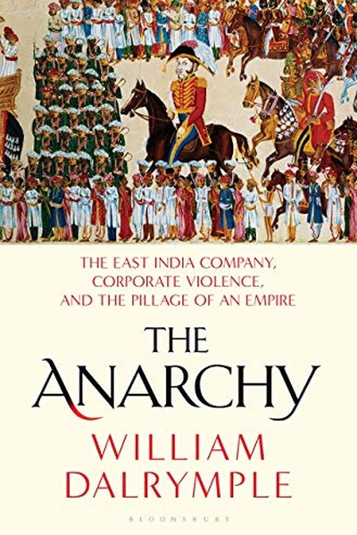

Library › History
The Anarchy — Summary & Key Lessons

How a trading company with 30,000 men conquered an empire of millions — and then lost it all.
📖 OPEN THE FULL INTERACTIVE BREAKDOWN →🌐 Read it in Hindi, Hinglish, Gujarati, Tamil & 22 more languages — free, with audio.
💡 The Big Idea
The East India Company was the world's first corporate empire: a private firm that raised armies, minted coins and taxed millions. It succeeded because it moved faster than crumbling Mughal institutions and exploited the anarchy of a collapsing state — a reminder that power vacuums get filled, and whoever fills them sets the rules.
🧠 The 6 Key Lessons
Lesson 1: Power Vacuums Get Filled — Usually by the Fastest
Chapter 1: The Company's Rise
When the Mughal empire weakened, nobody ruled India — and into that vacuum stepped a trading company that could move money, ships and men faster than any traditional court. The lesson is timeless: chaos is not empty space, it is an opportunity waiting for whoever arrives with organization first.
📖 Example: After the death of Aurangzeb, regional nawabs fought endlessly while the Company calmly built forts, armies and banking networks. By the time Indian rulers understood what was happening, the 'merchants' already collected the taxes of Bengal — an empire… Read the full example →
⚡ Do this: When your industry enters chaos, be the one who brings order: standardize, organize, and show up with systems while others panic.
Lesson 2: Underestimating Outsiders Is Expensive
Chapter 2: Plassey
Bengal's Nawab Siraj-ud-Daulah dismissed the Company as 'a body of mere traders'. That arrogance, plus the betrayal of his own general Mir Jafar, delivered Bengal at Plassey. Never judge rivals by their current size — judge them by their trajectory, alliances and patience.
📖 Example: Siraj's own commander Mir Jafar had secretly promised the British his support, so at Plassey the Nawab's army stood frozen while the Company's small force walked away victorious. The empire did not fall to cannon alone; it fell to a leader who could not read… Read the full example →
⚡ Do this: Before dismissing a small competitor or junior rival, map their alliances and patience — underestimated opponents win wars you never fight.
Lesson 3: Greed Is a Weapon Others Can Use Against You
Chapter 3: The Plunder of Bengal
Robert Clive and his officers looted Bengal so thoroughly that the Company's servants returned to England as the richest men in Europe. But the reputation of corruption poisoned everything: the Company could never legitimize its rule, and its own employees worked for themselves before the firm.
📖 Example: Clive extracted a personal fortune and the infamous jagir, while Company officials secretly traded on their own account, undermining the Company's monopoly. The same greed that made the conquest possible guaranteed the conquest would never be stable — profit… Read the full example →
⚡ Do this: Audit your incentives: when personal gain and organizational mission diverge, you are building a Bengal-style collapse in miniature.
Lesson 4: Disunity Is the Conqueror's Best Ally
Chapter 4: The Company's Expansion
The Company never beat a united India; it beat a collection of rivals who refused to coordinate. Mysore's Tipu Sultan, the Marathas and the Sikhs all fought the British separately and fell separately. Coalitions of the willing beat geniuses of the solo act — in markets, politics and teams alike.
📖 Example: Tipu Sultan allied with the French and fought brilliantly, but the Marathas and the Nizam sat out his wars. One by one — Mysore, the Marathas, the Sikhs — each regional power was absorbed. Their combined strength could have stopped the Company; their… Read the full example →
⚡ Do this: In any competition, look for alliances before solo heroics. Ask: who else loses if we lose, and how do we coordinate now?
Lesson 5: Monopoly Breeds Rot
Chapter 5: The Company as State
Once the Company became sovereign, its commercial sharpness decayed into bureaucratic corruption — famines coincided with shareholder dividends, and accountability dissolved between 'company' and 'state'. Institutions that lose competition lose their edge; the discipline of the market is also a moral discipline.
📖 Example: During the Bengal famine of 1770, when millions starved, Company officials still traded in grain and remitted profits to London. What began as a nimble merchant firm had become an extractive machine with no competitor to keep it honest — and its own… Read the full example →
⚡ Do this: If your team or product has no competition or external check, invent one: benchmarks, audits, or a real rival — rot follows monopoly.
Lesson 6: Every Empire Has an Expiry Date
Chapter 6: The Rebellion
In 1857 the Company's rule ended in a storm of mutiny and war, followed by the British Crown taking over — and eventually independence. Systems built on extraction, racial arrogance and speed without legitimacy eventually hit their reckoning. The question is never if, but when and how.
📖 Example: The immediate trigger was greased cartridges offending both Hindu and Muslim sepoys — a classic failure to understand the people you rule. Within months, the Company that had conquered an empire was dissolved by the British Parliament, its name erased from… Read the full example →
⚡ Do this: Build your organization with legitimacy — listen to the people it serves — or prepare for the day they stop cooperating.
✅ 5-Step Action Plan
- Map the power vacuum in your market and position your team as the organized solution
- Study your rivals' alliances, not just their size
- Run a personal incentive audit: where does your gain diverge from your mission?
- Build one coalition or partnership this quarter instead of going solo
- Create an external check — benchmark, audit or competitor — to keep your team honest
⚠️ When This Doesn't Work
⚠️ When this doesn't work: Reading history as 'the strong exploit the weak' can justify ruthless behaviour. The Company's methods eventually destroyed it, and modern societies have laws the 18th century lacked. Use the strategic lessons (speed, alliances, legitimacy) — not the predatory ethics.
💀 The Graveyard Proves It
⚔️ The Battle of Plassey — The Betrayal That Gave India's Richest Province to a Trading Company. Burn: The Nawab's kingdom, Bengal's treasury, and 200 years of subjugation. Read the full case study →
💬 Best Quotes from The Anarchy
- “The East India Company was a corporation that behaved like a sovereign state, and a sovereign state that behaved like a corporation.”
- “Anarchy does not mean the absence of order; it means the absence of a single authority to enforce it.”
- “The Company's great skill was in converting its debts into territorial conquest.”
Interactive version: mark lessons as read, listen in your language, share quote cards.